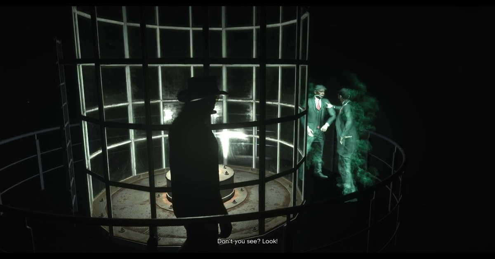

GTA 6 hides a ghost ship — and a cursed knife at the bottom of the sea
A haunted lighthouse on the far edge of Leonida hides a century-old murder, a sunken wreck, and a Legendary melee weapon — and if you climb back up after 1 AM, the ghost ship itself sails past.

Disclosure: this post contains affiliate links. I earn a commission on qualifying purchases.
GTA 6 has ghosts. Not the kind in your car — an actual ghost ship on the high seas, at the end of one of the most elaborate Easter eggs in the game. Players have mapped the whole thing now: a haunted lighthouse on the far northeastern edge of Leonida, two arguing specters, a century-old murder, and a Legendary melee weapon sitting on a skeleton at the bottom of the ocean.
It starts at the St. Lucia Lighthouse on Little Hardin Island, in Leonard County. Head there at night — after 10 PM — and you'll hear two men arguing somewhere above you. Climb to the top and you can watch them: two green ghosts scuffling in the lamp room until one of them is shoved off the edge.
The murder of Godfrey and Frank
The ghosts aren't random. Come back down and there's a photograph at the foot of the lighthouse stairs. Flip it over and it's dated 1909: Godfrey Asher, the assistant keeper, and Frank Pudney, the head keeper.
The rest of the story is in a ruined house on a small island northwest of the lighthouse. Break in, turn right, and a blue journal falls from the fireplace. The logbook tells of a storm, a strange chest that washed ashore, and Godfrey's growing obsession with it — the same obsession that ended with one keeper dead and the other haunted.
The Cursed Knife
The journal points east. Get in a boat with scuba gear and sail out from the lighthouse, and the sea turns on you: fog rolls in, a storm builds, and your engine cuts out. That's the spot. Dive down with your metal detector and you'll find a sunken boat on the ocean floor — and the Cursed Knife in the hands of a skeleton.
It's a Legendary melee weapon, and it's yours once you surface. But the egg isn't over.
The ghost ship
Climb back to the top of the lighthouse after 1 AM and look northeast with your binoculars. The ship is out there — a glowing green vessel sailing through the dark — and it disappears fast, so have the binoculars ready before you reach the top.
A few things to know before you go: you'll need a boat with scuba gear, or the Key Cloner to steal one from a dock on the island. The lighthouse is also a WAiNK Landmark, so scan it while you're there. And the guides note you may need to do the whole thing solo, as just Jason or just Lucia.
One week after launch, the Easter egg hunt is its own game inside the game. The Mario hats were the first prize everyone chased. A ghost ship and a cursed knife are the next one.
Sources: GTA 6: Find the Cursed Knife and Ghost Ship easter egg walkthrough (Video Games Chronicle) · Where To Find The Haunted Lighthouse And Ghost Ship In GTA 6 (GameSpot) · Ghost Ship Easter egg (Dexerto) · Lighthouse Ghost Ship Easter Egg Location in GTA 6 (TechWiser)
Gear up: Razer — mice, keyboards, headsets and laptops.